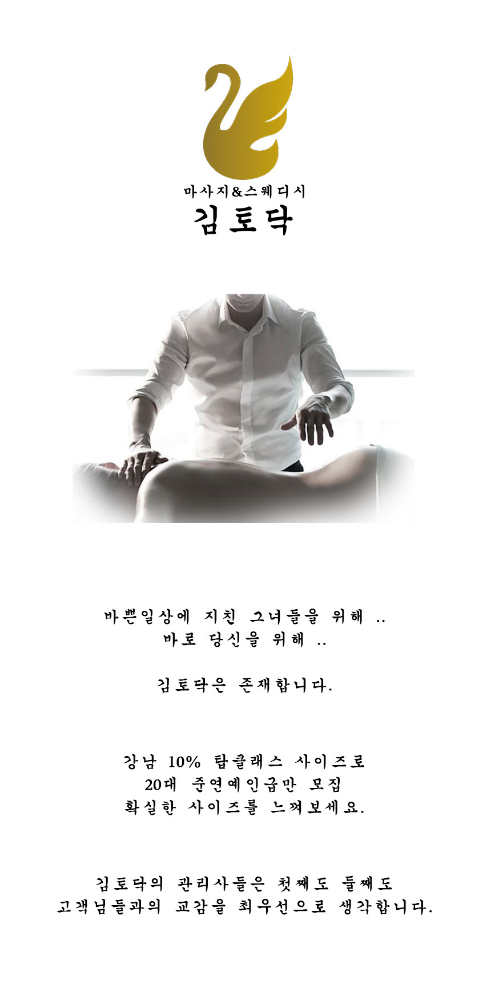
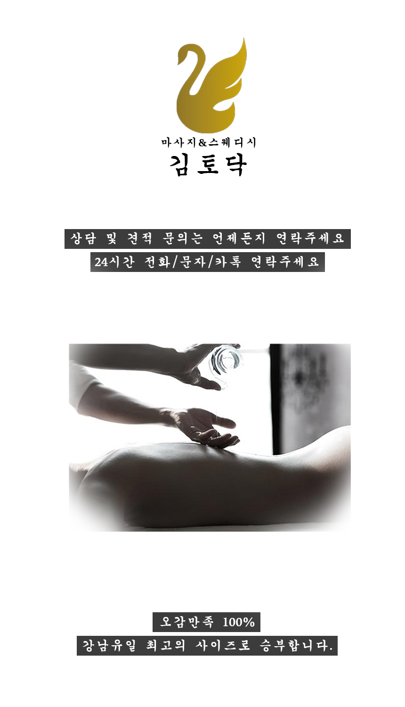
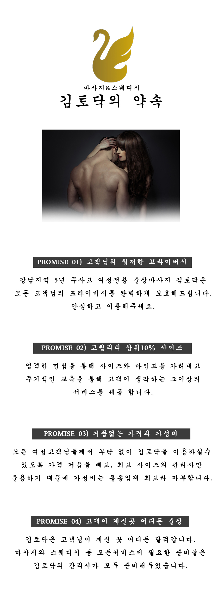
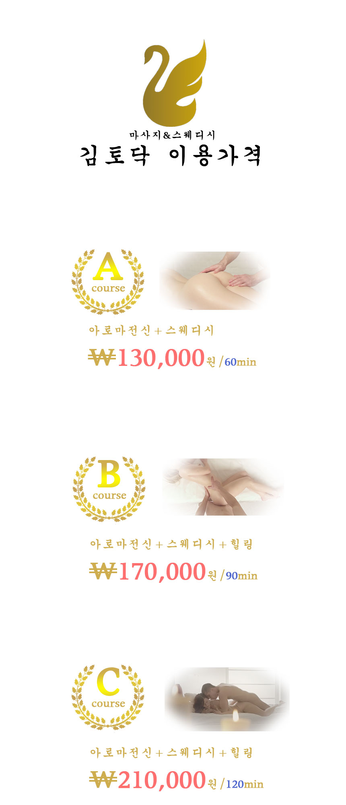
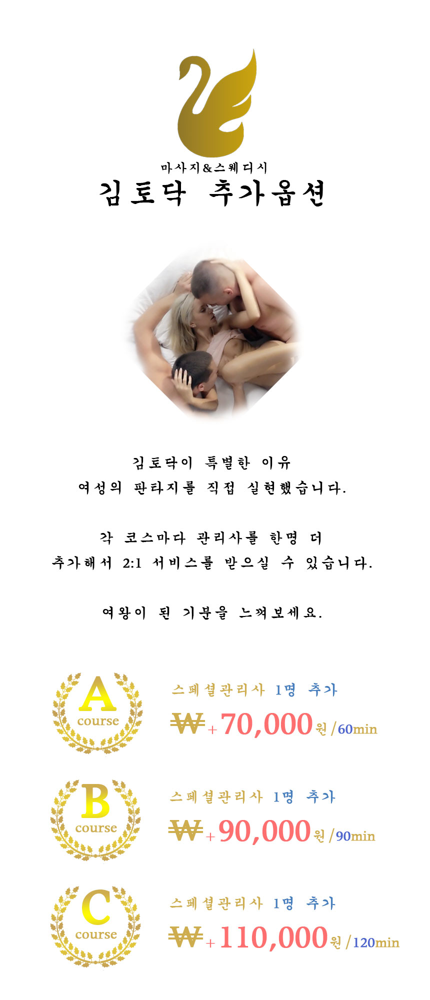
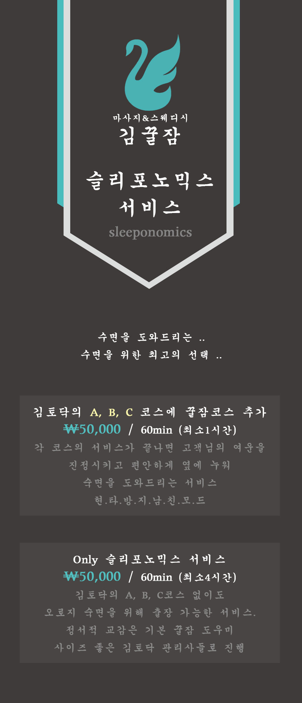
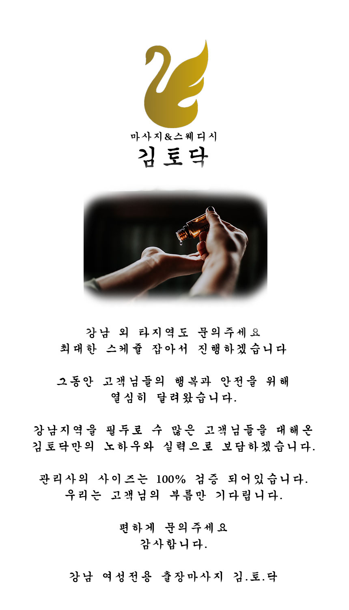

강남여성전용마사지 / 강남여성전용안마 🌸김토닥🌸 kimtodak.kr
강남여성전용마사지 / 강남여성전용안마 🌸김토닥🌸 kimtodak.kr
✆ 전화연결 터치 O1O-5905-1306
익명문의 카카오톡 오픈채팅 터치
상위 10% 준연예인급 관리사만 운용하는 강남토닥이 김토닥
바쁜일상에 지친 그녀들을 위해.. 바로 당신을 위해.. 김토닥은 존재합니다.
연중무휴 24시간 운영되는 강남여성전용마사지 / 강남여성전용안마 김토닥은. 강남지역을 필두로 서울과 경기전이역에서 활동하는 5년무사고 안전업체 입니다. 서울중심에 사무실을 운용하기때문에 서울 외곽과 경기지역만 아니라면 도로상황에 따라 30~1시간 이내로 고객님이 위치하신 곳까지 신속하게 찾아갈 수 있다는게 김토닥의 큰 장점입니다.
사이즈 좋은 상위10% 준연예인급만 채용하여 서비스하는 강남여성전용마사지 / 강남여성전용안마 김토닥의 초특급 질 좋은 서비스를 느껴보세요!
      
특별한 강남토닥이 김토닥만의 스페셜한 서비스를 느껴보세요!
동종업계 최고의 관리사 사이즈! 입맛대로 선택하는 A B C 코스에,
회원님들의 판타지를 실현해줄 스페셜 관리사까지! 모든게 준비되어있습니다.
편하게 연락주시면 친절하게 답변해드리겠습니다.
이번에 새롭게 추가된 슬리포노믹스 서비스는, 고객님께서 김토닥의 서비스를 받으시고 남아있는 여운을 낮춰드리고 옆에 같이 누워서 숙면을 취하실 수 있게 도와드리는 숙면도우미라고 생각하시면 됩니다. 김토닥의 기본 A B C서비스를 이용하지 않으시더라도 only슬리포노믹스(최소4시간)을 이용하시면 똑같은 상위10% 김토닥의 관리사분들이 찾아가 서비스를 진행해드립니다^^
강남여성전용마사지 / 강남여성전용안마 / 강남토닥이 김.토.닥!
같은 카테고리의 다른 글
Home| 강남토닥이 🌸kimtodak.kr🌸 김토닥 상위10% 사이즈 관리사만 운용 | 2019. 08. 08 |
|---|---|
| 강남여성전용마사지 / 강남여성전용안마 VIP 토닥토닥 서비스 | 2019. 08. 08 |
| 강남여성전용마사지 / 강남여성전용안마 확실한 선택 김토닥 | 2019. 08. 08 |
| 강남여성전용마사지 / 강남여성전용안마 🌸김토닥🌸 kimtodak.kr | 2019. 08. 08 |